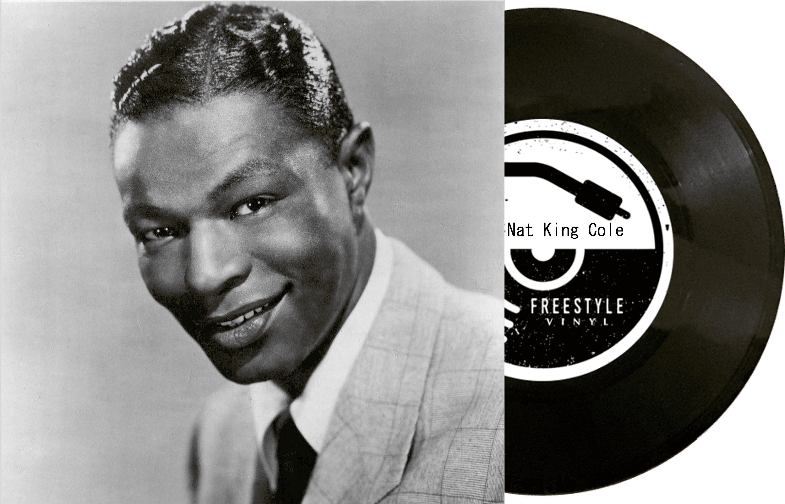
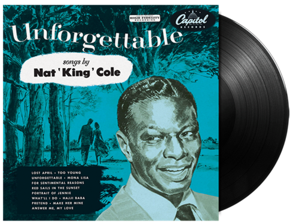

| 이름 | Nat King Cole (냇킹콜) |
|---|---|
| 출생 | 1919년 3월 17일 미국 앨라배마주 몽고메리 |
| 사망 | 1965년 2월 15일(45세) |
| 활동 시기 | 1936~1965년 |
| 악기 | 피아노, 지휘 |
Cole은 1930년대 후반에 재즈 피아니스트 로서 경력을 시작했으며, 그 당시 King Cole Trio를 결성했다. 이 그룹은 1940년대 Capitol Records 에서 가장
많이 팔린 그룹(그리고 유일한 흑인 아티스트)이 되었다.
Cole의 트리오는 그 뒤를 이은 소규모 재즈 앙상블 의 모델이 되었다. 1950년부터 그는 Nat King Cole이라는 이름으로 솔로 가수로 전향했다. 주류에서 성공을 거두었음에도 불구하고 Cole은 경력 중에 극심한 인종 차별 에 직면했다. 시민권 운동에서 주요 보컬 공인은 아니었지만 Cole은 지역 NAACP 지부 의 회원이었고 1963년 워싱턴 대행진 에 참여했다.
그는 정기적으로 시민권 단체에서 공연했다. 1956년부터 1957년까지 Cole은 NBC 버라이어티 시리즈 The Nat King Cole Show를 진행했는데, 이는 흑인 미국인이 진행한 최초의 전국 방송 텔레비전 쇼가 되었다.
그의 1960년 크리스마스 앨범 The Magic of Christmas (The Christmas Song 이라고도 함)는 1960년대에 발매된 가장 많이 팔린 크리스마스 앨범이었고, Rolling Stone 에서 40개의 필수 크리스마스 앨범(2019) 중 하나로 선정되었다.
2022년 콜의 "The Christmas Song" 녹음은 차트에 데뷔한 지 62년 만에 9위에 오르면서 Billboard Hot 100에서 톱 10까지 가장 긴 여정이라는 기록을 깼다 . 그리고 미국 의회도서관에서 미국 국립 녹음 등록부에 보존하기 위해 선정되었다.
Cole의 트리오는 그 뒤를 이은 소규모 재즈 앙상블 의 모델이 되었다. 1950년부터 그는 Nat King Cole이라는 이름으로 솔로 가수로 전향했다. 주류에서 성공을 거두었음에도 불구하고 Cole은 경력 중에 극심한 인종 차별 에 직면했다. 시민권 운동에서 주요 보컬 공인은 아니었지만 Cole은 지역 NAACP 지부 의 회원이었고 1963년 워싱턴 대행진 에 참여했다.
그는 정기적으로 시민권 단체에서 공연했다. 1956년부터 1957년까지 Cole은 NBC 버라이어티 시리즈 The Nat King Cole Show를 진행했는데, 이는 흑인 미국인이 진행한 최초의 전국 방송 텔레비전 쇼가 되었다.
그의 1960년 크리스마스 앨범 The Magic of Christmas (The Christmas Song 이라고도 함)는 1960년대에 발매된 가장 많이 팔린 크리스마스 앨범이었고, Rolling Stone 에서 40개의 필수 크리스마스 앨범(2019) 중 하나로 선정되었다.
2022년 콜의 "The Christmas Song" 녹음은 차트에 데뷔한 지 62년 만에 9위에 오르면서 Billboard Hot 100에서 톱 10까지 가장 긴 여정이라는 기록을 깼다 . 그리고 미국 의회도서관에서 미국 국립 녹음 등록부에 보존하기 위해 선정되었다.
